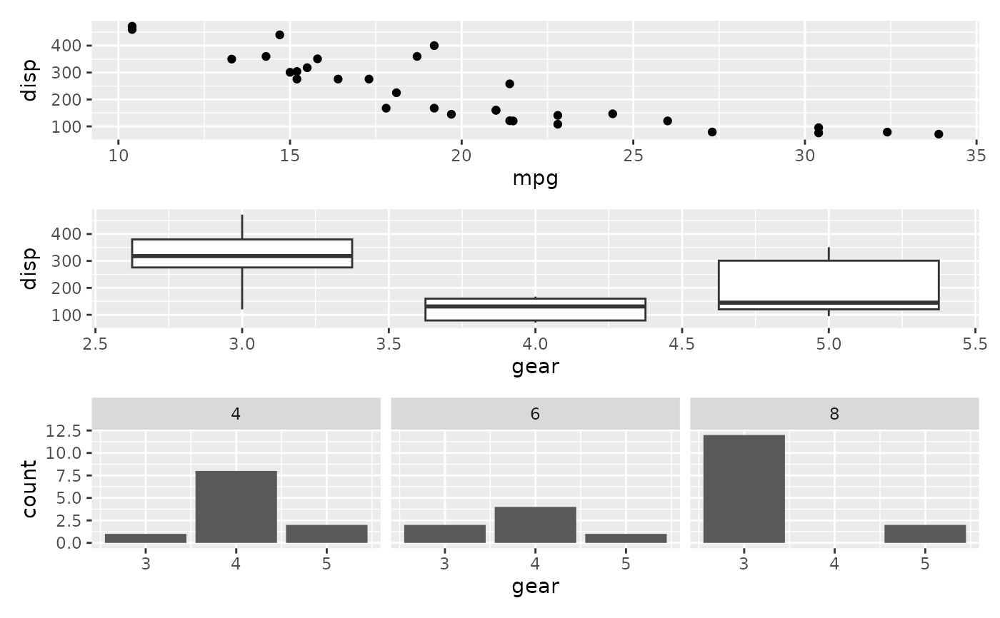
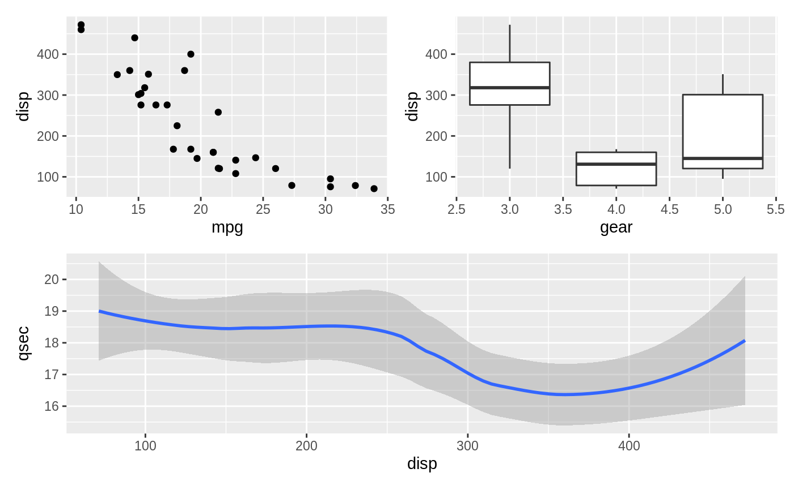
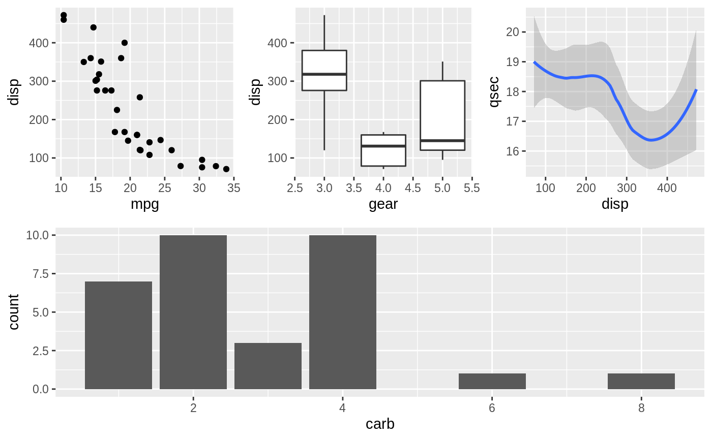
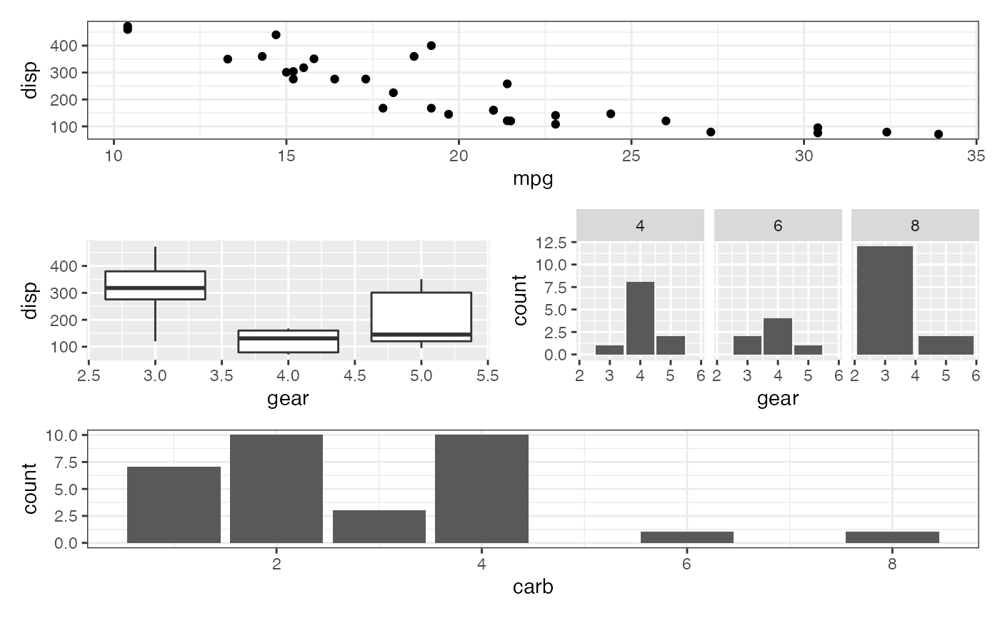
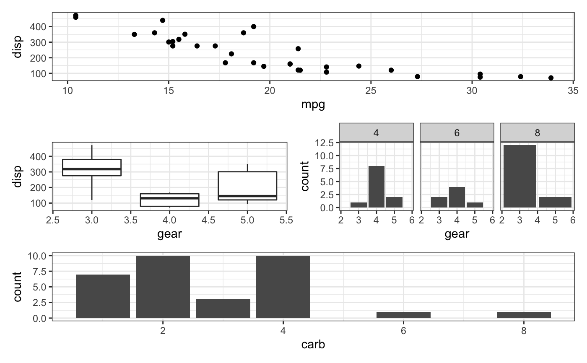

In addition to the + operator known in ggplot2, patchwork defines logic
for some of the other operators that aids in building up your plot
composition and reduce code-reuse.
# S3 method for ggplot
-(e1, e2)
# S3 method for ggplot
/(e1, e2)
# S3 method for ggplot
|(e1, e2)
# S3 method for gg
*(e1, e2)
# S3 method for gg
&(e1, e2)A ggplot or patchwork object
A ggplot or patchwork object in case of /, or a gg object
such as a geom or theme specification in case of * and &
A patchwork object
patchwork augment the + operator from ggplot2 and allows the user to
add full ggplot objects together in order to compose them into the same
view. The last added plot is always the active one where new geoms etc. are
added to. Another operator that is much like it, but not quite, is -. It
also adds plots together but instead of adding the right hand side to the
patchwork defined in the left hand side, it puts the left hand side besides
the right hand side in a patchwork. This might sound confusing, but in
essence - ensures that the right and left side are put in the same nesting
level (+ puts the right side into the left side). Using - might seem
unintuitive if you think of the operator as "subtract", but look at it as a
hyphen instead (the underlying reason is that - is the only operator in the
same precedence group as +).
Often you are interested in creating single column or single row layouts.
patchwork provides | (besides) and / (over) operators to support
stacking and packing of plots. See the examples for their use.
In order to reduce code repetition patchwork provides two operators for
adding ggplot elements (geoms, themes, facets, etc.) to multiple/all plots in
a patchwork. * will add the element to all plots in the current nesting
level, while & will recurse into nested patches.
library(ggplot2)
p1 <- ggplot(mtcars) + geom_point(aes(mpg, disp))
p2 <- ggplot(mtcars) + geom_boxplot(aes(gear, disp, group = gear))
p3 <- ggplot(mtcars) + geom_bar(aes(gear)) + facet_wrap(~cyl)
p4 <- ggplot(mtcars) + geom_bar(aes(carb))
# Standard addition vs division
p1 + p2 + p3 + plot_layout(ncol = 1)

p1 + p2 - p3 + plot_layout(ncol = 1)

# Stacking and packing
(p1 | p2 | p3) /
p4

# Add elements to the same nesting level
(p1 + (p2 + p3) + p4 + plot_layout(ncol = 1)) * theme_bw()

# Recurse into nested plots as well
(p1 + (p2 + p3) + p4 + plot_layout(ncol = 1)) & theme_bw()
